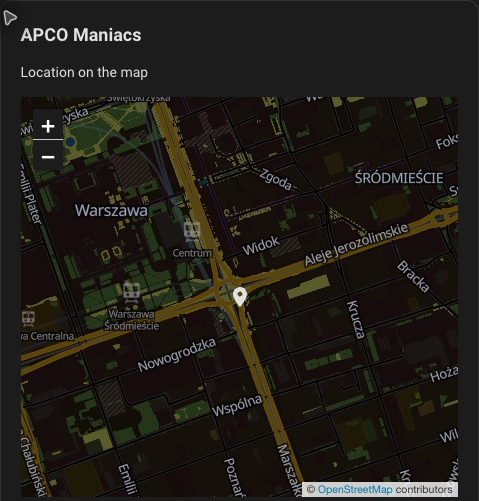

Wdrożenie krok po kroku
Instrukcja obejmuje instalację lub aktualizację integracji APCO Maniacs (wcześniej Warun), konfigurację harmonogramu odpadów i dodanie karty pogodowej. Warun ocenia warunki do latania na podstawie godzinowej prognozy wybranej encji pogodowej.
Instrukcja projektu: Polski / English / Italiano / Español. Bez jawnego language karta dopasowuje język do interfejsu HA (PL, EN, IT lub ES), a dla pozostałych wybiera angielski. Ręczny wybór ma pierwszeństwo; nieznane wartości także włączają angielski.
Domyślny opis w GitHubie i HACS jest po angielsku. README zawiera dwa osobne, bezstratne zrzuty angielskiej karty wykadrowane do samych kart, bez otaczającego tła i podpisów nad kartą, wyświetlane w README w szerokości 320 px z automatyczną wysokością: Warszawę w ciemnym motywie oraz Piecki w jasnym; przykład Warszawy używa oznaczonych danych demonstracyjnych. Stopka mieści czas aktualizacji, link wsparcia, skrót „YT” i źródło pogody w jednym wierszu; na wąskim ekranie może się zawinąć.
Instalacja i aktualizacje przez HACS — karta Dashboard
Projekt jest przygotowany jako karta Dashboard (kategoria techniczna plugin). Paczka dist/apco-maniacs-card.js zawiera kod, style, tłumaczenia i grafikę; HACS nie instaluje plików configuration.yaml, automatyzacji ani integracji Python. Publiczne repozytorium do dodania w HACS: https://github.com/piotrwozniak/apco-maniacs-card.
- W HACS otwórz menu repozytoriów niestandardowych, dodaj adres opublikowanego repozytorium i wybierz kategorię Dashboard.
- Zainstaluj APCO Maniacs, sprawdź dodany przez HACS zasób i odśwież przeglądarkę. Gdy zasoby są w YAML, dodaj moduł ze ścieżką wskazaną przez HACS ręcznie.
- Dodaj kartę APCO Maniacs z listy kart. W graficznym edytorze kliknij mapę lub przesuń pinezkę, podaj nazwę i zapisz. Dokładne współrzędne są zapisywane niezależnie dla każdej karty. Nowa karta domyślnie startuje w lokalizacji domu HA. Możesz też wpisać współrzędne ręcznie.
- Wybór pinezki nie zmienia lokalizacji HA. Dla punktu w innej strefie czasowej ustaw też
timezone; strefa nie jest wyznaczana automatycznie z mapy. - Przy migracji z ręcznej instalacji usuń stary zasób
/local/warun-web/warun-card.js, zachowaj zasób HACS i konfiguracje istniejących kart. Zamknij stronę i otwórz ponownie. Typy kart i ich ustawienia pozostają zgodne. - Kolejne wersje instaluj przez HACS, następnie odśwież przeglądarkę. Nie nadpisuj przy tym konfiguracji HA i scen.
Wybór miejsca na mapie — Warszawa
Otwórz dashboard → Edytuj panel → Edytuj kartę APCO Maniacs. Przełącz na edytor wizualny, jeśli widzisz YAML. Kliknij mapę lub przesuń pinezkę, podaj nazwę i zapisz kartę. Przykład: Warszawa, szerokość 52.2297, długość 21.0122, strefa Europe/Warsaw. Poniżej rzeczywisty widok natywnego edytora HA, sprawdzony 13 listopada 2026.

Do ręcznej instalacji tej samej paczki wystarczy jeden plik dist/apco-maniacs-card.js w www/apco-maniacs-card/ i zasób /local/apco-maniacs-card/apco-maniacs-card.js?v=1.0.7. Wariant czteroplikowy poniżej nadal działa. Nie ładuj obu wariantów naraz.
Stopka zawiera dyskretne linki: Buy Me a Coffee oraz Piotrek Lata — YouTube. Szczegóły testów i wydawania wersji: README.md. Pierwszy release przygotowano jako wersję 1.0.0; zdalna walidacja HACS i test na działającym HA następują po publikacji.
Wariant webowy — niezależny od Home Assistant
Folder warun-web/ zawiera samodzielną wersję Waruna pogodowego. Ten sam element <apco-maniacs-card> działa na zwykłej stronie i jako karta dashboardu HA. Nie korzysta z integracji Python, encji pogodowych ani sun.sun. Pobiera dane bezpośrednio z Open-Meteo. Ten wariant nie obsługuje przypomnień o odpadach.
Karta pokazuje bieżącą pogodę i okna pogodowe: kolejne godziny o tej samej ocenie są łączone bez limitu 3 godzin. Okno kończy się przy zmianie oceny, luce w danych, końcu dnia lub zachodzie słońca (gdy włączono porę lotów). Startuje od bieżącej pełnej godziny (14:15 → 14:00), a kolejne dni od pierwszej pełnej godziny po wschodzie (09:20 → 10:00). Jeśli warunki pozostają dobre, okno trwa aż do zachodu, np. 14:00–17:24. Ocena pogody nadal opiera się na danych godzinowych. Godziny słońca są liczone osobno dla każdego dnia. Open-Meteo jest innym źródłem niż integracja pogodowa HA, więc wartości mogą się różnić.
Nazwa, wygląd i język
Wtyczka i karta noszą nazwę APCO Maniacs. Karta w HA dopasowuje się do aktywnego motywu, a poza HA ma domyślną ciemną skórkę. W nagłówku pokazuje nazwę miejsca i dyskretną paralotnię. Dane zachowują układ temperatura | wiatr KIERUNEK | opady. Podgląd obu języków: Polski / English / Italiano / Español (wymaga uruchomionego lokalnego serwera).
Język karty w HA: edytuj dashboard → edytuj kartę APCO Maniacs → wybierz Polski lub English w polu języka → zapisz kartę. Edytor pozwala również zapisać nazwę, współrzędne, progi, strefę czasową i zakres prognozy. Język obejmuje teksty, dni tygodnia, format liczb i komunikaty. W YAML odpowiada mu language: pl albo language: en. Dotychczasowy typ custom:warun-card nadal działa; nie zmieniaj istniejących identyfikatorów encji ani katalogu integracji custom_components/warun.
Język sensora integracji Python: Ustawienia → Urządzenia i usługi → APCO Maniacs → opcje wpisu → Język. To niezależne ustawienie opisów sensora. Język interfejsu formularzy integracji wynika z profilu HA. Nowa karta pobiera pogodę samodzielnie, więc nie odczytuje opcji sensora. Zmiana języka sensora zmienia również jego tekstowy stan; uwzględnij to w automatyzacjach porównujących stan do konkretnego napisu.
Uruchomienie bez Home Assistant
- Otwórz terminal w katalogu projektu i uruchom poniższe polecenie (wymaga Python 3). Nie otwieraj
index.htmlbezpośrednio przezfile://, ponieważ komponent używa modułów JavaScript.
python3 -m http.server 8765 --bind 127.0.0.1- Otwórz http://127.0.0.1:8765/warun-web/. Serwer musi pozostać uruchomiony. Zatrzymasz go skrótem Ctrl+C.
- W sekcji „Ustawienia miejsca i progów” podaj nazwę i współrzędne, ustaw progi oraz liczbę godzin. Zmiany formularza działają do ponownego otwarcia strony. Nie wymagają konta ani klucza API.
- Aby zapisać konfigurację własnej strony na stałe, po załadowaniu modułu wywołaj
setConfigjak w przykładzie poniżej. Możesz też opublikować pliki na zwykłym serwerze statycznym HTTPS — bez backendu i procesu budowania.
<apco-maniacs-card></apco-maniacs-card>
<script type="module">
import './warun-card.js';
document.querySelector('apco-maniacs-card').setConfig({
name: 'Faryny',
latitude: 53.531944,
longitude: 21.385556,
wind_threshold: 5,
precip_threshold: 10,
forecast_hours: 40,
timezone: 'Europe/Warsaw',
language: 'pl',
daylight_only: true
});
</script>Ten sam komponent jako karta Home Assistant
Zwarty nagłówek pokazuje nazwę miejsca obok mniejszej paralotni, a pod nią „APCO Pogoda dla Paralotniarzy” (lub odpowiednik angielski). Odświeżanie jest dyskretną ikoną bez ramki, po prawej stronie w pierwszym wierszu nazwy miejsca. Używa osadzonej grafiki AI opartej na APCO F1 MKII Azure #24. Karta dziedziczy kolory tła, tekstu, obramowań, czcionkę i kształt karty z aktywnego motywu HA, w tym jego trybu jasnego i ciemnego. Bloki pogodowe korzystają z kolorów sukcesu i błędu motywu. Poza HA pozostaje ciemny wygląd domyślny. Po aktualizacji odśwież także warun.css. Nie trzeba kopiować katalogu assets; cztery pliki wykonawcze wystarczą.
- Utwórz katalog
/config/www/warun-web/. Skopiuj do niego cztery pliki:warun-card.js,weather.mjs,i18n.mjsiwarun.css. Zachowaj je obok siebie.index.htmljest potrzebny tylko do uruchomienia jako osobna strona. - Jeżeli dopiero utworzyłeś katalog
www, zrestartuj HA, aby udostępnił pliki przez/local/. - W zasobach dashboardu dodaj URL
/local/warun-web/warun-card.js?v=27, typ moduł JavaScript. Zasoby znajdziesz w ustawieniach dashboardów; w zależności od wersji może być potrzebny tryb zaawansowany profilu. - Dodaj ręczną kartę i wklej konfigurację poniżej. Nie jest to karta Markdown ani iframe.
type: custom:apco-maniacs-card
name: Faryny
latitude: 53.531944
longitude: 21.385556
wind_threshold: 5
precip_threshold: 10
forecast_hours: 40
timezone: Europe/Warsaw
language: pl
daylight_only: trueAby dodać drugą kartę dla Piecek, użyj tego samego typu karty z poniższą konfiguracją (współrzędne z konfiguracji projektu):
type: custom:apco-maniacs-card
name: Piecki
latitude: 53.721
longitude: 21.015
wind_threshold: 5
precip_threshold: 10
forecast_hours: 40
timezone: Europe/Warsaw
language: pl
daylight_only: truePlik warun-web/godzina-14.html pokazuje zachowanie karty o 14:15 czasu polskiego dla Londynu 6 listopada 2026: zegar jest ustawiony na potrzeby prezentacji, a wartości pogody pochodzą z prognozy godzinowej. Plik warun-web/godzina-15.html pokazuje analogiczny podgląd o 15:10, z przedziałem skróconym do zachodu o 17:24 czasu polskiego. Standardowe karty nadal używają bieżącej godziny. Plik warun-web/mieszane.html pokazuje podgląd mieszanych warunków dla Londynu, również na żywej prognozie; kolory zmieniają się wraz z pogodą. Plik warun-web/opady.html pokazuje dodatkowy podgląd dla Dublina, na żywej prognozie (nie są to dane demonstracyjne; opady zmieniają się wraz z pogodą). Samodzielny podgląd pokazuje Faryny i Piecki obok siebie, a na wąskim ekranie jedno pod drugim. Każda karta pobiera prognozę dla własnych współrzędnych. Poprawki wyglądu komponentu webowego dotyczą również jego osadzenia w HA jako custom:warun-card. Nie przenoszą się automatycznie do starej karty Markdown ani integracji Python.
- Prognoza zaczyna się od wyróżnionej daty, np. „Sobota, 14 listopada”, czcionką 16 px. Między blokiem „Teraz” a pierwszą datą jest dodatkowy odstęp 8 px. Skróty kierunku wiatru są pogrubione. Nie ma dodatkowego nagłówka „Okna pogodowe / Tylko pora lotów”. Każda godzina jest oceniana osobno; kolejne godziny o tej samej ocenie łączą się bez limitu długości w jednym dniu. Zmiana oceny (także brak danych) kończy blok, więc dwie dobre godziny przed złą pozostają zielone. Nadal obowiązuje filtr dnia, start od bieżącej pełnej godziny i skracanie okna do zachodu. Gdy dzisiejsze okna już się skończyły, wyjaśnienie jest dostępne po najechaniu na pierwszą datę prognozy.
- Zapisz kartę. Nie musisz dodawać integracji Warun ani tworzyć encji. Istniejąca integracja Python może działać obok tej karty, jeżeli nadal potrzebujesz jej sensorów do automatyzacji.
- Na stałe zmieniaj ustawienia w edytorze graficznym lub konfiguracji YAML karty. W HA użyj edytora graficznego karty lub jej YAML; formularz tymczasowy jest dostępny wyłącznie w samodzielnej stronie.
- Przy kolejnej aktualizacji skopiuj ponownie wszystkie cztery pliki, zwiększ numer
?v=w zasobie i wykonaj pełne odświeżenie przeglądarki z pominięciem pamięci podręcznej, również dla zależnych plikówweather.mjs,i18n.mjsiwarun.css.
Kontrola: karta powinna pokazać miejsce, pobraną pogodę i kolorowe bloki okien pogodowych o wspólnej ocenie. Każdy blok pokazuje przedział czasu, temperaturę, wiatr i opady w jednym wierszu rozdzielonym znakami |. Kierunek wiatru pokazuje wyłącznie skrót literowy obok prędkości, np. WNW; bez strzałek. Dla 0% wyświetlamy „brak opadów”; dla pozostałych wartości np. „opady 12%”, bez słowa „do”. Wartość jest maksymalnym prawdopodobieństwem w przedziale. Kierunek w przedziale odpowiada godzinie z najwyższą prędkością wiatru. Kolor bloku wskazuje ocenę warunków. Przy włączonym filtrze pory lotów wieczorne okna są ukryte; po zakończeniu dzisiejszych okien karta wyjaśnia przejście do kolejnego dnia. Możesz zmienić próg wiatru, aby sprawdzić zmianę oceny. Brak danych nie jest traktowany jako dobra pogoda.
Połączenie i źródło: przeglądarka musi mieć dostęp do https://api.open-meteo.com. Współrzędne wybranego miejsca są przekazywane temu serwisowi przy pobieraniu prognozy. Dane odświeżają się co 15 minut, gdy karta jest otwarta. Przy błędzie poprzednia prognoza pozostaje widoczna z komunikatem, a ocena bieżąca jest wstrzymana. Strona nie wysyła powiadomień w tle. Publiczny interfejs API Open-Meteo jest przeznaczony do zastosowań niekomercyjnych; dla zastosowań komercyjnych sprawdź warunki dostawcy.
Testy webowe: node --test warun-web/*.test.mjs (Node.js 18 lub nowszy). Testy nie zastępują sprawdzenia na Twoim dashboardzie. Podgląd samodzielny używa dokładnie tego samego elementu, co karta HA; ciemna paleta jest stała, a szerokość dopasowuje się do układu dashboardu.
Dokumentacja: Open-Meteo i karty niestandardowe HA.
Wariant z integracją Python i przypomnieniami o odpadach
Poniższe kroki dotyczą dotychczasowej integracji HA i karty Markdown. Nie są wymagane do uruchomienia samego komponentu webowego.
1. Przygotuj dostęp i kopię
- Otwórz katalog konfiguracji Home Assistant przez Studio Code Server, Sambę, SFTP lub dostęp do katalogu montowanego w kontenerze. W HA OS jest to zwykle
/config. Rozpoznasz go po plikuconfiguration.yaml. - Wykonaj kopię zapasową Home Assistant lub zachowaj kopie plików, które zmienisz, oraz istniejącego folderu
custom_components/warun. - Sprawdź, czy masz działającą encję pogodową, np.
weather.farynyalboweather.piecki, obsługującą prognozę godzinną. Warun korzysta z istniejącej integracji pogodowej.
2. Skopiuj pliki
Ścieżki źródłowe poniżej są względne wobec katalogu tego projektu. Jeśli Twój katalog konfiguracji jest inny niż /config, odpowiednio zmień ścieżki docelowe.
| Plik lub folder projektu | Miejsce docelowe i sposób aktualizacji |
|---|---|
configuration.yaml | /config/configuration.yaml. W istniejącej instalacji połącz sekcję sensorów szablonowych i dyrektywy !include z własnymi ustawieniami. |
automations.yaml | /config/automations.yaml. Zaktualizuj automatyzacje o tych samych identyfikatorach; zachowaj pozostałe. |
scenes.yaml | /config/scenes.yaml. Plik projektu zawiera pustą listę []. Skopiuj go tylko wtedy, gdy nie masz tego pliku. Zachowaj istniejące sceny. |
custom_components/warun/ | Skopiuj całą zawartość do /config/custom_components/warun/. |
scripts.yaml | Przy pierwszym wdrożeniu skopiuj lub połącz z /config/scripts.yaml. Przy aktualizacji opisanych poprawek nie wymaga zmiany. Plik musi istnieć, jeżeli jest dołączony w konfiguracji. |
Układ integracji powinien wyglądać tak:
/config/
├── configuration.yaml
├── automations.yaml
├── scripts.yaml
├── scenes.yaml
└── custom_components/
└── warun/
├── __init__.py
├── config_flow.py
├── const.py
├── coordinator.py
├── sensor.py
├── manifest.json
├── strings.json
├── hacs.json
└── translations/
├── pl.json
└── en.jsonNie twórz dodatkowego poziomu warun/warun/. Foldery md_card_place i uzupelnienie_backup nie są integracjami do instalowania. Pliki AGENTS.md, tests/ i ta instrukcja pozostają dokumentacją projektu.
3. Sprawdź konfigurację przed restartem
- Upewnij się, że konfiguracja zawiera po jednej dyrektywie dołączającej automatyzacje, skrypty i sceny:
automation: !include automations.yaml
script: !include scripts.yaml
scene: !include scenes.yaml- Zachowaj pozostałe ustawienia swojej instalacji. Stary szablon
warun_faryny_sensorzostał zastąpiony integracją Warun — usuń go, jeżeli nadal jest w konfiguracji serwera. Nie włączaj zakomentowanych sensorów REST met.no. - W Home Assistant otwórz narzędzia YAML i uruchom Sprawdź konfigurację. W zależności od wersji sekcja może znajdować się w Narzędziach deweloperskich lub Ustawieniach → Narzędzia. Możesz też wywołać akcję
homeassistant.check_config. - Jeżeli walidacja zgłosi błąd, popraw go przed restartem. Gdy sprawdzenie zakończy się poprawnie, zrestartuj Home Assistant. Samo przeładowanie YAML nie załaduje zmian kodu Pythona integracji.
4. Dodaj lub sprawdź Warun
- Jeżeli integracja była już skonfigurowana, pozostaw jej istniejący wpis — po restarcie powinna użyć nowego kodu.
- Przy pierwszej instalacji wybierz Ustawienia → Urządzenia i usługi → Dodaj integrację → APCO Maniacs.
- Wskaż miejsce na mapie i podaj nazwę, np. Faryny.
- Wybierz encję pogodową odpowiadającą miejscu, np.
weather.faryny. Pinezka zapisuje współrzędne; nie tworzy źródła pogody ani nie zmienia lokalizacji wybranej encji. - W opcjach Waruna ustaw próg wiatru, próg prawdopodobieństwa opadów i liczbę godzin prognozy. Domyślnie: 5 m/s, 10%, 40 godzin. Godzina jest dobra, gdy obie wartości są ściśle poniżej progów.
- Odszukaj utworzony sensor w encjach lub narzędziu Stanów. Zapisz jego rzeczywisty identyfikator — może różnić się od
sensor.warun_faryny.
Warun pobiera prognozę przez weather.get_forecasts z typem hourly, co 15 minut oraz po zmianach encji pogodowej. Nie wymaga atrybutu forecast na encji weather.*.
5. Dodaj kartę na dashboardzie
- Otwórz w projekcie plik
custom_components/md_card_place/md_card_placei skopiuj całą jego treść. - Na dashboardzie Home Assistant dodaj lub edytuj kartę Markdown. Wklej treść pliku w pole zawartości, nie do pliku konfiguracji HA.
- W zmiennej
sensor_namewpisz rzeczywisty identyfikator sensora Warun bez prefiksusensor.:
{% set sensor_name = 'warun_faryny' %}
{% set wind_threshold = 5.0 %}
{% set precip_threshold = 10 %}
{% set wind_convert = 1.0 %}Powyższy identyfikator jest przykładem. Pozostaw wind_convert = 1.0, bo integracja przekazuje wiatr w m/s. Progi karty ustawia się osobno od opcji integracji — ustaw takie same, jeżeli chcesz zgodnych ocen. Liczba trzygodzinnych okien zależy od liczby dostępnych wpisów prognozy. Karta korzysta z sun.sun do ukrywania okien poza godzinami lotów.
6. Sprawdź przypomnienia o odpadach
- Sprawdź obecność
sensor.trashes_todayorazsensor.trashes_tomorrow. W razie konfliktu nazw popraw identyfikatory encji lub odwołania w automatyzacji. - Sensor dzisiejszy pokazuje dzisiejsze odbiory, a jutrzejszy odbiory następnego dnia. Brak odbioru oznacza pusty tekst.
- Zweryfikuj terminy w obu harmonogramach w
configuration.yaml. Obecnie obejmują 2026 rok. Przy zmianie terminów aktualizuj harmonogram zarówno sensora dzisiejszego, jak i jutrzejszego. - Sprawdź, czy akcje
notify.mobile_app_gutekinotify.mobile_app_iphone_mistnieją w Twojej instalacji. W razie potrzeby zastąp je nazwami swoich telefonów. - Automatyzacja przypomina o jutrzejszym odbiorze o 14:00 i 20:15. Ustaw w HA strefę czasową
Europe/Warsaw. Możesz przetestować każdą akcję powiadomienia osobno na własnym telefonie.
7. Kontrola po wdrożeniu
- W logach nie ma błędów ładowania YAML ani integracji
warun. - Sensor Warun ma krótki stan: Warun, Brak warunu, Brak danych lub Brak prognozy. W razie błędu pobierania może być niedostępny.
- Atrybut
opiszawiera opis warunków i prognozy;forecast_rawzawiera wpisy prognozy, gdy są dostępne, awind_speed_unitma wartośćm/s. - Karta pokazuje dane właściwego sensora, a nie komunikat o braku prognozy.
- Sensor jutrzejszych odpadów odpowiada następnej dacie w harmonogramie; oba telefony otrzymują próbne powiadomienia.
8. Jeśli coś nie działa
| Objaw | Co sprawdzić |
|---|---|
| Błąd YAML albo brak pliku | Wcięcia w configuration.yaml, istnienie wszystkich plików wskazanych przez !include i wynik sprawdzenia konfiguracji. |
| Warun nie pojawia się na liście integracji | Ścieżkę /config/custom_components/warun/manifest.json, restart Home Assistant i logi ładowania integracji. |
| Brak prognozy lub sensor niedostępny | W narzędziu Akcji wywołaj weather.get_forecasts dla wybranej encji z type: hourly. Sprawdź odpowiedź, obsługę prognozy godzinowej przez źródło i logi Waruna. |
| Karta nie widzi danych | Rzeczywisty identyfikator sensora, zmienną sensor_name oraz obecność atrybutu forecast_raw. |
| Brak powiadomień | Stan sensor.trashes_tomorrow, nazwy akcji telefonów, włączenie automatyzacji i jej ślady wykonania. |
Jeśli aktualizacja uniemożliwia poprawne działanie, przywróć kopie zmienionych plików oraz poprzedni folder Warun, sprawdź konfigurację i zrestartuj Home Assistant. Jeśli HA nie uruchamia się normalnie, przywróć pliki przez użyty dostęp do katalogu konfiguracji.